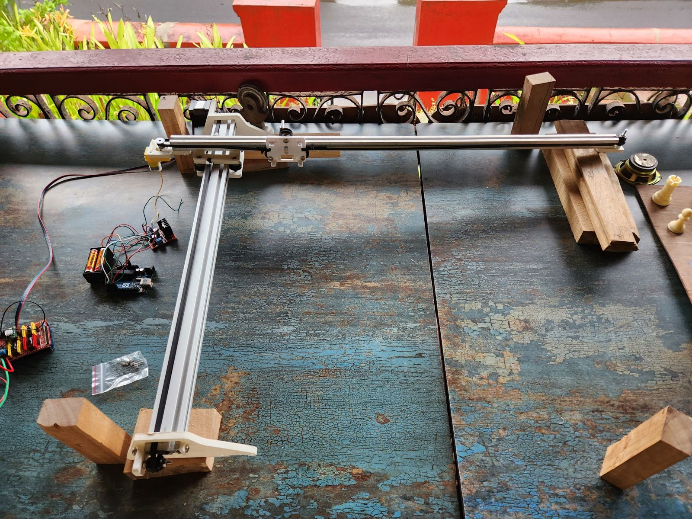
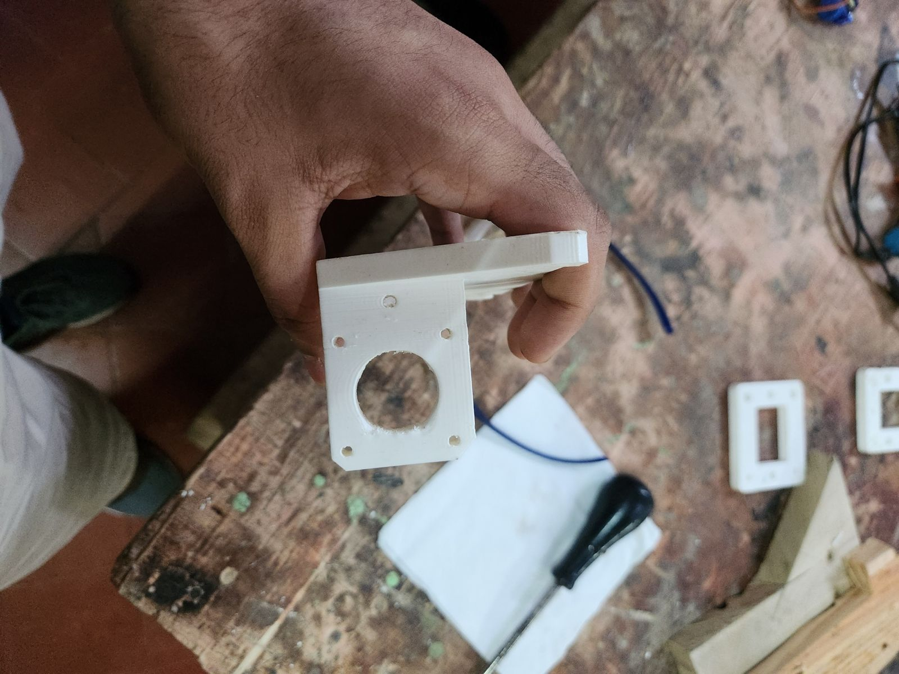
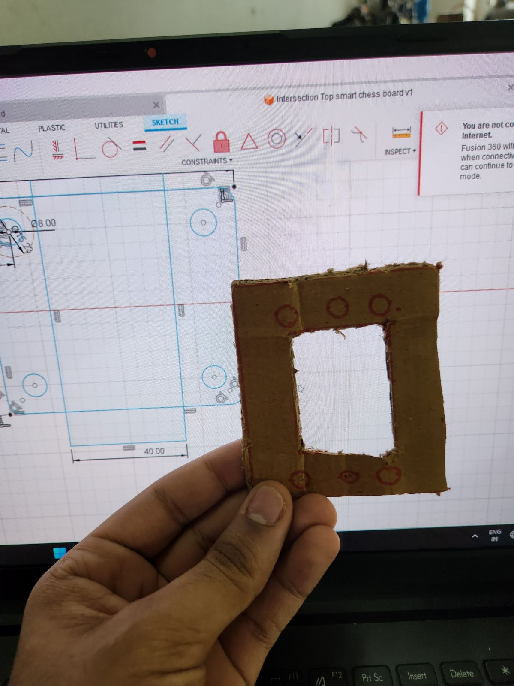
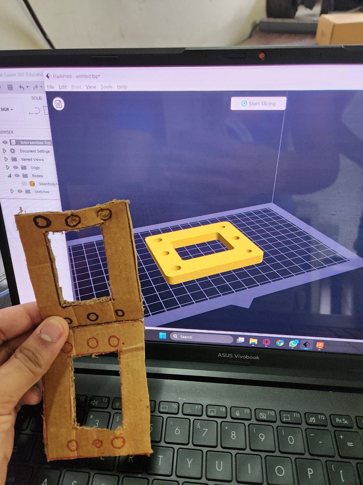
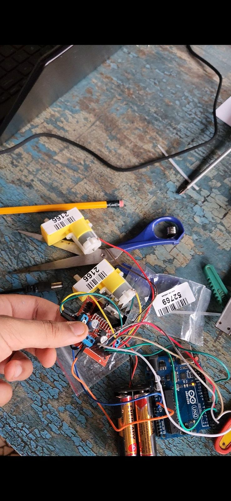
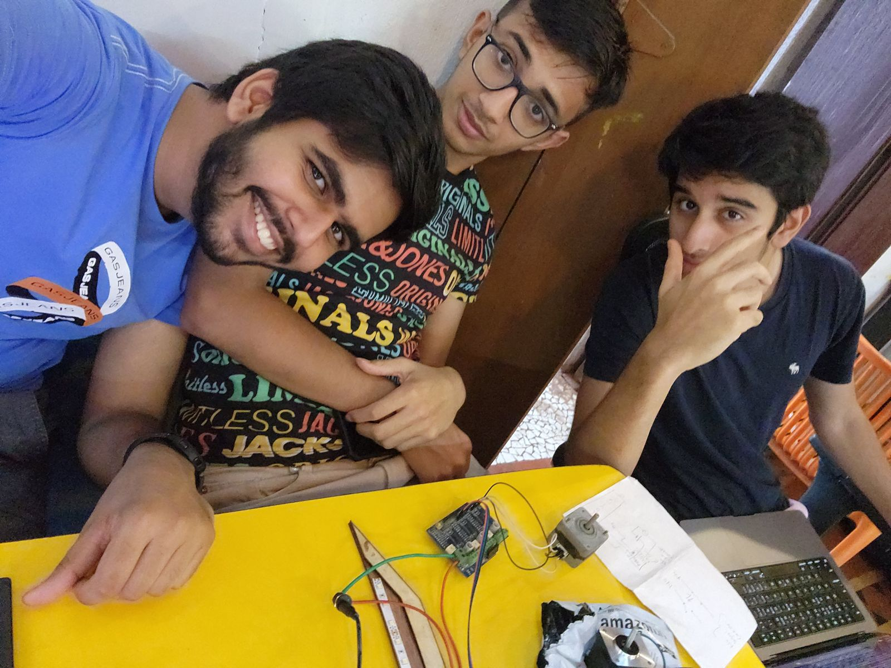

Voice-Automated Chess Bot
Sheet
07 of 08
- Dates
- Jan 2023 – Jul 2023
- Context
- Makers Asylum residency, Mumbai, India; team of three
- Role
- In charge of the Arduino code, the brushless DC motors, the chessboard woodworking, and the paper prototype; helped design 3D-printed parts in Fusion 360
- Tools
- Arduino · stepper motors · brushless DC motors · electromagnet · Fusion 360 · 3D printing · laser cutting · woodworking · Adafruit speech recognition on a Raspberry Pi (built by a teammate)
Wrote the Arduino code, handled the DC motors and built the wooden chessboard for a three-person voice-controlled chess robot prototype; by the expo it moved a pawn to e3.






Objective
Build a working prototype for the expo.
What I did
- Wrote the Arduino code and handled the brushless DC motors.
- Built the wooden chessboard.
- Made the paper prototype.
- Helped design the 3D-printed motor mounts, frame brackets and board stands in Fusion 360, making edits to the parts.
Built by the team
A teammate built the speech interface (Adafruit speech recognition on a Raspberry Pi). The team also built the XY gantry that carries the electromagnet under the board, and 3D-printed the motor mounts, the frame brackets, and the stands for the whole board.
Result
Got one piece, a pawn, to move to e3. The move didn't come from a spoken command.
What I learned
The project deepened my interest in inclusive design and in integrating hardware and software.
Gallery





